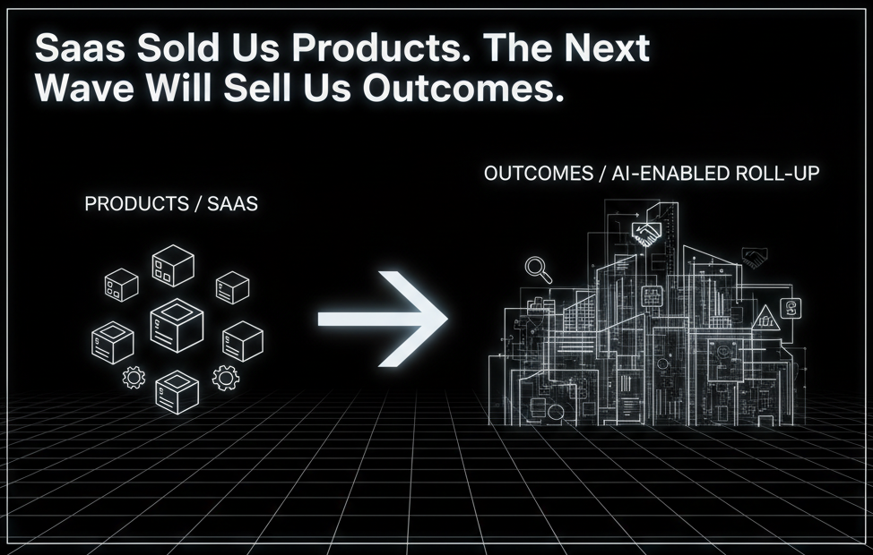
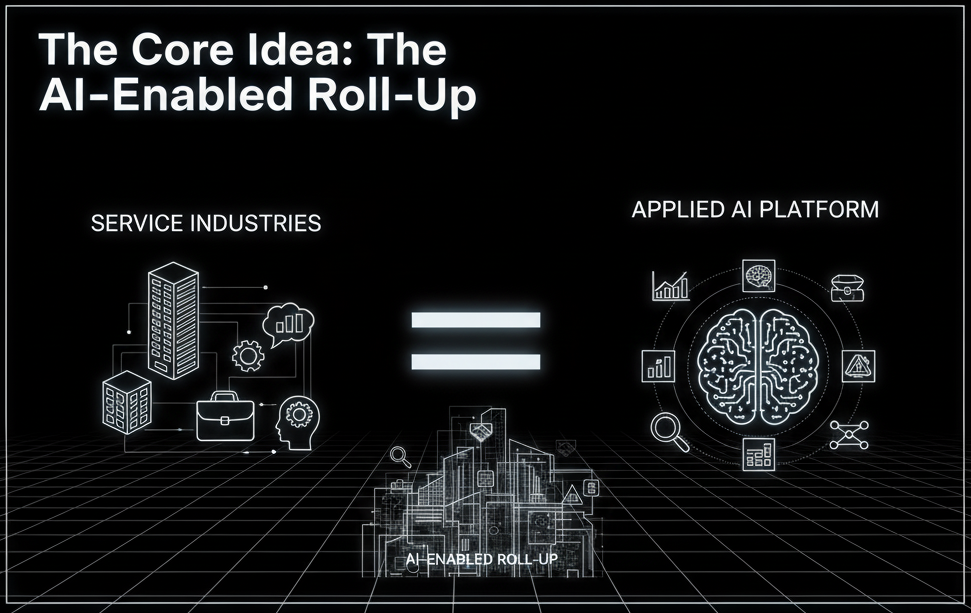
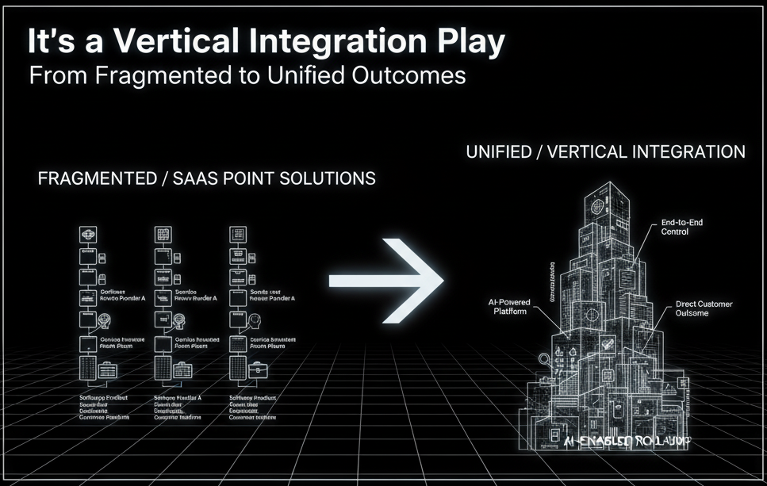

SaaS Sold Us Products. The Next Wave Will Sell Us Outcomes.
I just read a fascinating blog post from General Catalyst (GC) called "The Future of Services", and it's one of those "lightbulb" pieces that clicks a lot of things into place. For the last 15 years, venture capital has been obsessed with the SaaS "Rule of 40." But GC argues that this focus on products made us forget what customers actually want: outcomes.
Their new thesis? The real, multi-trillion dollar opportunity isn't just in selling software. It's in using AI to fundamentally transform the massive, low-tech services sector. And their playbook for doing it is something they call the "AI-enabled roll-up."
Here's a breakdown of their idea and my take on why it's so compelling—and why it represents such a unique challenge.
The Core Idea: The "AI-Enabled Roll-Up"
In short, the model works like this:
- Find a fragmented, low-tech service industry (think legal services, IT support, property management, call centers).
- Back a founding team that has deep AI expertise and deep industry/M&A experience.
- Build a purpose-built AI platform designed to revolutionize that specific service.
- Instead of just selling that AI as a SaaS product, use it as an operational advantage to acquire (or "roll-up") existing service businesses in that industry.
- Integrate the AI to transform the acquired companies from the inside out, creating a unified, tech-forward services giant.
This isn't just about giving accountants a new "AI assistant" (the SaaS model). It's about building a new kind of accounting firm where AI processes all the forms, freeing up human accountants to provide enterprise-level financial strategy to every single small business client.
My Take: Why This Is More Than Just Hype
GC's post isn't just theory; they've been investing billions in this model for over three years. And their reasoning for why this model will win is what I find most convincing.
1. A New Benchmark: The "Rule of 60"
The SaaS Rule of 40 (where Growth Rate % + Profit Margin % should be >= 40) forced a trade-off. You could grow fast, or you could be profitable, but doing both was tough.
GC claims the AI-enabled roll-up model shatters this. They are targeting a "Rule of 60," aiming for 10-20% growth while simultaneously doubling profit margins to 30-40% or more.
How?
- Massive Efficiency: AI automates the low-margin, manual work that bogs down service businesses.
- Immediate Growth: Acquisitions provide immediate, inorganic revenue.
- New Markets: The AI creates new, high-margin "capability-led" growth by offering sophisticated services that were previously unaffordable for most customers.
Take their portfolio company Crescendo (customer service). After acquiring call centers, they deployed an AI that could automate 80%+ of interactions. This didn't just cut costs—it tripled resolved calls, revealing massive unmet customer demand. They're now targeting 60-65% gross margins.
2. It's a Vertical Integration Play
This, to me, is the real genius. The old model was to sell a SaaS tool to a law firm. This new model is to become the law firm, but one that runs on an AI engine.
By owning the entire service delivery chain, these companies capture 100% of the value they create. Eudia, another example, isn't just selling legal tech; it acquired a 300+ person legal delivery team. It now delivers complete legal outcomes (like M&A due diligence or compliance) as a subscription service. A pure-play SaaS tool just can't compete with that level of integration.
3. The Market is Enormous
The U.S. services sector is a $6 Trillion+ beast, dwarfing the software market. For the most part, it's been left behind by technology.
This model targets that massive opportunity. It takes services once reserved for huge enterprises (like complex legal analysis) and, through AI-driven efficiency, makes them accessible to the 35 million small businesses in America. That doesn't just steal market share; it creates an entirely new market.
The New "Garage" Play: A Different Kind of Challenge
As exciting as this model is, its brilliance is matched by its operational complexity. This isn't a typical "two founders in a garage" play in the old sense, where the sole focus is building a single, perfect software product.
This journey requires a different blueprint from day one. It demands a rare blend of skills that must be part of the founding DNA, even for a lean team. As GC points out, you need AI technologists, industry experts, and operators with M&A experience.
For founders embarking on this journey, this doesn't mean it's impossible; it means the challenge is different.
- It's a "Both/And" Problem: We have to be world-class at building AI and world-class at M&A integration and operations.
- It's a People-First Play: This is a change management challenge. The goal isn't just to deploy software, but to successfully merge our technology with the people and processes of the businesses we acquire, empowering them without breaking the culture.
- It's a New Kind of Founding Team: The "garage" team for this new wave might look different. It might be a technologist, an industry veteran, and a finance operator right from the start.
The difficulty isn't a barrier; it's the moat. For those of us willing to get our hands dirty with M&A spreadsheets and machine learning models, the opportunity is immense.
Final Thoughts: The Age of Outcomes
The General Catalyst post feels like a signpost. The SaaS wave was about building better tools. It created immense value, but it was just setting the table.
This next wave, as many reports on AI transforming professional services are now highlighting, is about building better outcomes. It's messier, more operationally complex, and requires a new breed of builder. But by combining applied AI with the direct ownership of service delivery, this "AI-enabled roll-up" model could unlock a boom that makes the SaaS gold rush look small by comparison.
It's a fundamental shift from selling products to delivering results, and it's a trend I'll be watching—and building—very, very closely.